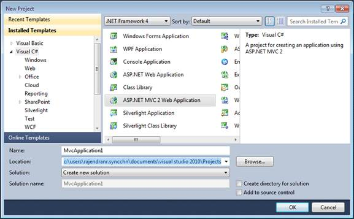
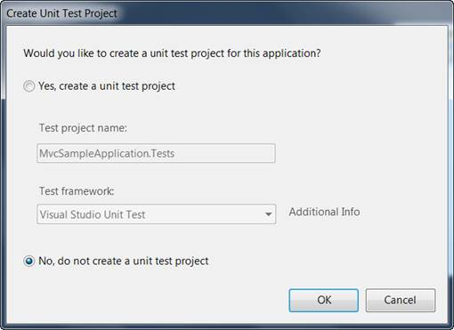

To begin, you will create a new ASP.NET MVC project.
To create a new MVC project:
1. On the File menu, click New Project. The New Project dialog box is displayed.

Figure 31: New Project Dialog Box
2. On the upper-right corner, make sure that .NET Framework 4.0 is selected.
3. Under Project types, expand either Visual Basic or Visual C#, and then click Web.
4. Under Visual Studio installed templates, select ASP.NET MVC 2 Web Application.
5. In the Name box, enter MvcSampleApplication.
6. In the Location box, enter a name for the project folder.
If you want the name of the solution to differ from the project name, enter a name in the Solution Name box.
7. Select the Create directory for solution.
8. Click OK.
The Create Unit Test Project dialog box is displayed.

Figure 32: Create Unit Test Project Dialog Box
9. Select No. Do not create a unit test project.
10. Click OK.
By default, the name of the test project is the application project name with "Tests" added. However, you can change the name of the test project. By default, the test project will use the Visual Studio Unit Test framework.
 Note: The other option becomes unavailable for
selection as shown in the following below.
Note: The other option becomes unavailable for
selection as shown in the following below.

Figure 33: Selecting an Option
11. Click OK.
The new MVC application project and a test project are generated. (If you are using the Standard or Express editions of Visual Studio, the test project is not created.)
 Examining the MVC
Project
Examining the MVC
Project